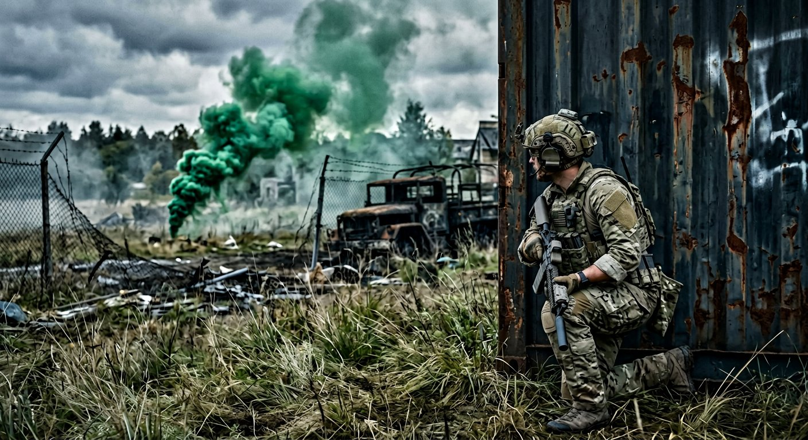
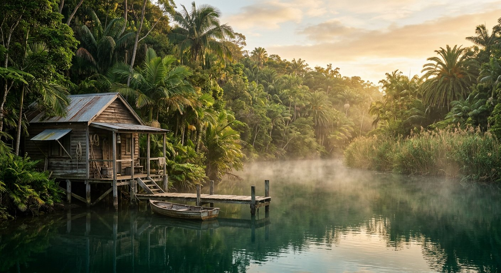
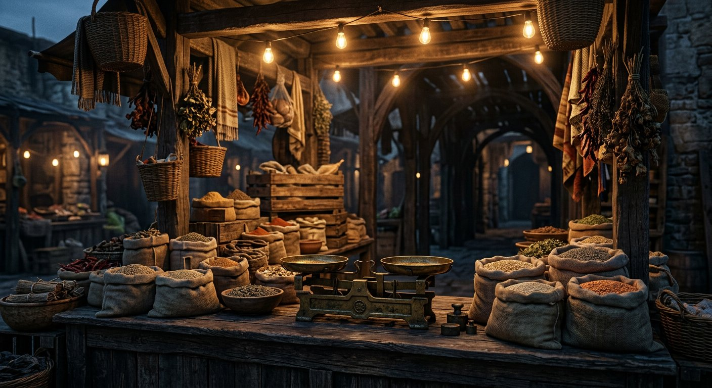

Hazard Operations
Entrer avec un kit, ressortir avec plus que ce qu'on a emporté. Le mode PvPvE qui fait tout le sel de Delta Force — et qui punit chaque erreur.
Comment fonctionne un raid
Préparation
Choisir sa carte, sa difficulté et son loadout. La règle d'or : ne jamais emporter ce que l'on n'a pas les moyens de perdre. L'objet de mission critique va dans la Safe Box, qui survit à la mort.
Insertion
Spawn semi-aléatoire. Les premières secondes décident du run : identifier sa position, écouter, choisir une route de loot à l'écart des points chauds connus.
Loot & PvPvE
Piller, gérer son poids et ses slots, décider quoi jeter. Les gardes PNJ et les boss gardent les meilleures salles ; les autres escouades écoutent chaque échange de tir.
Extraction
La partie la plus dangereuse. Les extractions sont des points connus et campés. Prévoir une sortie secondaire, extraire plus tôt que trop tard. Un run à 100 000 Alloys réussi vaut mieux que trois runs ratés à 500 000 de kit.

Les 6 cartes
Zero Dam
DébutantLa carte d'entrée du mode extraction. Loot solide au barrage et dans les bâtiments administratifs, extractions généreuses, bots présents en Easy.…
Boss : Saeed (Capitaine de la garde, surnom Fiery Owl)
Layali Grove
IntermédiaireGrande carte boisée remaniée en S11 (2.0) : Fisher's Hut, Rock Cavern, Underground Dock. Hôtel Sparkling Empress = le plus gros concentré de keycards de valeur du jeu.…
Boss : Reis (surnom Abyss Shark, côté Ahsarah) — également contact de la tâche Bounty: Breaking Waves
Space City
AvancéRénovée en S11 : Bon Lab, Black Chamber, Test Range, Space City Switch. Carte verticale et technique, forte densité de salles à keycard.…
Boss : Desmoulins OU Hudson (directeurs Haavk) — tirage à chances égales à chaque apparition de commandant
Brakkesh 2.0
REFONTE S12Ville haute densité avec des salles très rentables derrière keycard. Refonte majeure en Saison Aurora : Babel entièrement retravaillée, Central Command Zone redessinée, n…
Boss : Blue Eagle HAAVK-64 (hélicoptère de patrouille)
Tide Prison
HardComplexe pénitentiaire offshore. SEULE carte où la partie commence enfermé en cellule : il faut s'évader avant de pouvoir tirer. Sections inondées et loot sous-marin ; au…
Boss : Warden Ghroth (boss principal depuis septembre 2025) + Raven (via les opérations Ravenhunter et Starslayer)
AZ3 Nuclear Plant
ÉliteCentrale nucléaire. Carte compacte pour des runs de loot rapides et des hot drops PvP. Zone radioactive : la Decontamination Chamber du Black Site est quasi obligatoire.…
Boss : Neural Device Agent H1000
Règles d'or
- Ne jamais emporter en raid ce que l'on n'a pas les moyens de perdre.
- La Safe Box survit à la mort : y placer l'objet de mission critique.
- Un run réussi à 100 000 Alloys vaut mieux que trois runs ratés à 500 000 de kit.
- Les keycards pèsent 0,05 kg : toujours les ramasser.
- Améliorer le Stash AVANT toute station de production.
- Monter Central Command dès que possible : il débloque le reste et augmente vos slots de vente.
Pas de wipe
Delta Force ne pratique PAS de wipe de stash entre les saisons. Tout investissement dans le Black Site est permanent. En revanche, les missions de la saison précédente sont réinitialisées (reset total des missions S11 à l'arrivée d'Aurora).
Conséquence stratégique : chaque Tekniq Alloy investi dans le Black Site est un investissement permanent. Contrairement à d'autres extraction shooters, l'accumulation de long terme est récompensée.
Planifier son Black SiteLa pêche, le Bazar et le niveau 17
La pêche est l'activité la plus calme du jeu, et elle se déroule au beau milieu d'une partie d'extraction. Ce n'est pas une zone protégée : on peut parfaitement vous surprendre en pleine action. Des joueurs rapportent s'être fait abattre à vue plusieurs fois au bord de l'eau.
- 1 Atteignez le niveau 17 en Operations. Il n'y a ni raccourci, ni achat, ni code pour contourner ce palier.
- 2 Lancez une partie sur Layali Grove et trouvez le pêcheur Joe Reed au bord de la rivière.
- 3 Acceptez sa demande d'introduction et terminez-la pendant la partie.
- 4 Extrayez-vous pour recevoir votre première canne. Mourir avant annule tout.
- 5 Votre matériel de pêche se range dans la trousse à outils, l'emplacement de transport qui s'ouvre lui aussi au niveau 17.

Où le trouver
Sa position change d'une partie à l'autre, mais trois secteurs reviennent constamment.
- Serenity Bay — sautez dans le puits au-dessus des ruines de Garbi, traversez le canal souterrain à la nage et ressortez à la cabane en bois
- Ponton de Blue Harbor — la plage au bord de la rivière, près du point d'apparition
- Bas-fonds sud d'Amia Town — vers la cabane du front de mer sud
Le Bazar en Saison 12
La Saison 12 ajoute l'échange de poissons au Bazar. Combiné à l'aperçu des matériaux du Bazar trois jours avant son renouvellement, cela transforme la pêche en petite activité économique planifiable plutôt qu'en simple curiosité.
